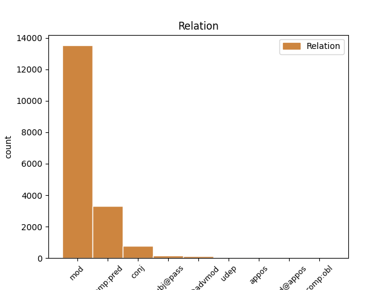
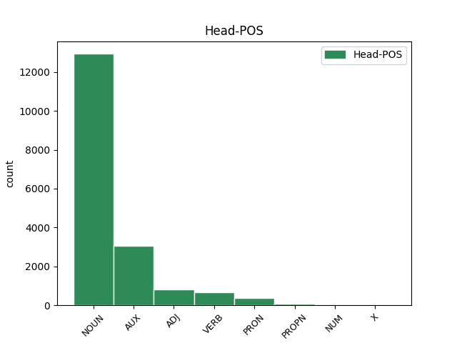
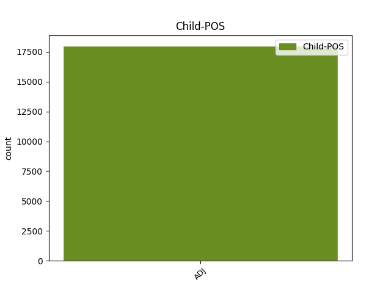

Distribution of features within this leaf



Agreement Rules sorted by frequency.
- When the dependent token is the modifer(mod) of the head token, and the dependent token is ADJ.
1 si _ _ _ _ 0 _ _ _
2 autem _ _ _ _ 0 _ _ _
3 secundum _ _ _ _ 0 _ _ _
4 aliquid _ _ _ _ 0 _ _ _
5 sui _ _ _ _ 0 _ _ _
6 sit _ _ _ _ 0 _ _ _
7 forma _ _ _ _ 0 _ _ _
8 , _ _ _ _ 0 _ _ _
9 id _ _ _ _ 0 _ _ _
10 quod _ _ _ _ 0 _ _ _
11 est _ _ _ _ 0 _ _ _
12 forma _ _ _ _ 0 _ _ _
13 dicimus _ _ _ _ 0 _ _ _
14 animam _ _ _ _ 0 _ _ _
15 , _ _ _ _ 0 _ _ _
16 et _ _ _ _ 0 _ _ _
17 id _ _ _ _ 0 _ _ _
18 cuius _ _ _ _ 0 _ _ _
19 est _ _ _ _ 0 _ _ _
20 forma _ _ _ _ 0 _ _ _
21 dicimus _ _ _ _ 0 _ _ _
22 primum primus ADJ B1|grn1|casD|gen3 Case=Acc|Degree=Pos|Gender=Neut|Number=Sing|NumType=Ord 23 mod _ _
23 animatum animo VERB J2|modM|tem4|grp1|casD|gen3 Aspect=Perf|Case=Acc|Degree=Pos|Gender=Neut|Number=Sing|Tense=Past|VerbForm=Part|Voice=Pass 0 _ _ _
24 , _ _ _ _ 0 _ _ _
25 ut _ _ _ _ 0 _ _ _
26 supra _ _ _ _ 0 _ _ _
27 dictum _ _ _ _ 0 _ _ _
28 est _ _ _ _ 0 _ _ _
29 . _ _ _ _ 0 _ _ _
1 anima _ _ _ _ 0 _ _ _
2 autem _ _ _ _ 0 _ _ _
3 humana _ _ _ _ 0 _ _ _
4 est sum AUX N3|modA|tem1|gen6 Mood=Ind|Number=Sing|Person=3|Tense=Pres|VerbForm=Fin|Voice=Act 0 _ _ _
5 ultima ultimus ADJ A1|grn3|casA|gen2 Case=Nom|Degree=Abs|Gender=Fem|Number=Sing 4 comp:pred _ _
6 in _ _ _ _ 0 _ _ _
7 nobilitate _ _ _ _ 0 _ _ _
8 formarum _ _ _ _ 0 _ _ _
9 . _ _ _ _ 0 _ _ _
1 sed _ _ _ _ 0 _ _ _
2 forma _ _ _ _ 0 _ _ _
3 rei _ _ _ _ 0 _ _ _
4 intellectae _ _ _ _ 0 _ _ _
5 non _ _ _ _ 0 _ _ _
6 recipitur _ _ _ _ 0 _ _ _
7 in _ _ _ _ 0 _ _ _
8 intellectu _ _ _ _ 0 _ _ _
9 materialiter _ _ _ _ 0 _ _ _
10 et _ _ _ _ 0 _ _ _
11 individualiter _ _ _ _ 0 _ _ _
12 , _ _ _ _ 0 _ _ _
13 sed _ _ _ _ 0 _ _ _
14 magis _ _ _ _ 0 _ _ _
15 immaterialiter _ _ _ _ 0 _ _ _
16 et _ _ _ _ 0 _ _ _
17 universaliter _ _ _ _ 0 _ _ _
18 , _ _ _ _ 0 _ _ _
19 alioquin _ _ _ _ 0 _ _ _
20 intellectus _ _ _ _ 0 _ _ _
21 non _ _ _ _ 0 _ _ _
22 esset _ _ _ _ 0 _ _ _
23 cognoscitivus _ _ _ _ 0 _ _ _
24 immaterialium _ _ _ _ 0 _ _ _
25 et _ _ _ _ 0 _ _ _
26 universalium universalis ADJ C1|grn1|casK|gen3|vgr1 Case=Gen|Degree=Pos|Gender=Neut|Number=Plur 0 _ _ _
27 , _ _ _ _ 0 _ _ _
28 sed _ _ _ _ 0 _ _ _
29 singularium singularis ADJ C1|grn1|casK|gen3 Case=Gen|Degree=Pos|Gender=Neut|Number=Plur 26 conj _ _
30 tantum _ _ _ _ 0 _ _ _
31 , _ _ _ _ 0 _ _ _
32 sicut _ _ _ _ 0 _ _ _
33 et _ _ _ _ 0 _ _ _
34 sensus _ _ _ _ 0 _ _ _
35 . _ _ _ _ 0 _ _ _
1 ad _ _ _ _ 0 _ _ _
2 primum _ _ _ _ 0 _ _ _
3 ergo _ _ _ _ 0 _ _ _
4 dicendum _ _ _ _ 0 _ _ _
5 quod _ _ _ _ 0 _ _ _
6 boetius _ _ _ _ 0 _ _ _
7 intelligit _ _ _ _ 0 _ _ _
8 per _ _ _ _ 0 _ _ _
9 formas _ _ _ _ 0 _ _ _
10 quae _ _ _ _ 0 _ _ _
11 sunt _ _ _ _ 0 _ _ _
12 sine _ _ _ _ 0 _ _ _
13 materia _ _ _ _ 0 _ _ _
14 , _ _ _ _ 0 _ _ _
15 rationes _ _ _ _ 0 _ _ _
16 rerum _ _ _ _ 0 _ _ _
17 quae _ _ _ _ 0 _ _ _
18 sunt _ _ _ _ 0 _ _ _
19 in _ _ _ _ 0 _ _ _
20 mente _ _ _ _ 0 _ _ _
21 divina _ _ _ _ 0 _ _ _
22 , _ _ _ _ 0 _ _ _
23 sicut _ _ _ _ 0 _ _ _
24 etiam _ _ _ _ 0 _ _ _
25 apostolus _ _ _ _ 0 _ _ _
26 dicit _ _ _ _ 0 _ _ _
27 , _ _ _ _ 0 _ _ _
28 heb. _ _ _ _ 0 _ _ _
29 xi _ _ _ _ 0 _ _ _
30 , _ _ _ _ 0 _ _ _
31 fide _ _ _ _ 0 _ _ _
32 credimus _ _ _ _ 0 _ _ _
33 aptata _ _ _ _ 0 _ _ _
34 esse _ _ _ _ 0 _ _ _
35 saecula _ _ _ _ 0 _ _ _
36 verbo _ _ _ _ 0 _ _ _
37 dei _ _ _ _ 0 _ _ _
38 , _ _ _ _ 0 _ _ _
39 ut _ _ _ _ 0 _ _ _
40 ex _ _ _ _ 0 _ _ _
41 invisibilibus _ _ _ _ 0 _ _ _
42 visibilia visibilis ADJ C1|grn1|casJ|gen3|vgr1 Case=Nom|Degree=Pos|Gender=Neut|Number=Plur 43 subj@pass _ _
43 fierent facio VERB N3|modK|tem2|gen9 Aspect=Imp|Mood=Sub|Number=Plur|Person=3|Tense=Imp|VerbForm=Fin|Voice=Pass 0 _ _ _
44 . _ _ _ _ 0 _ _ _
1 hoc _ _ _ _ 0 _ _ _
2 ergo _ _ _ _ 0 _ _ _
3 principium _ _ _ _ 0 _ _ _
4 quo qui PRON F1|grn1|casF|gen3 Case=Abl|Degree=Pos|Gender=Neut|Number=Sing|PronType=Rel 0 _ _ _
5 primo primus ADJ B1|grn1|casF|gen3 Case=Abl|Degree=Pos|Gender=Neut|Number=Sing|NumType=Ord 4 mod@advmod _ _
6 intelligimus _ _ _ _ 0 _ _ _
7 , _ _ _ _ 0 _ _ _
8 sive _ _ _ _ 0 _ _ _
9 dicatur _ _ _ _ 0 _ _ _
10 intellectus _ _ _ _ 0 _ _ _
11 sive _ _ _ _ 0 _ _ _
12 anima _ _ _ _ 0 _ _ _
13 intellectiva _ _ _ _ 0 _ _ _
14 , _ _ _ _ 0 _ _ _
15 est _ _ _ _ 0 _ _ _
16 forma _ _ _ _ 0 _ _ _
17 corporis _ _ _ _ 0 _ _ _
18 . _ _ _ _ 0 _ _ _
1 sicut _ _ _ _ 0 _ _ _
2 homo _ _ _ _ 0 _ _ _
3 perficitur _ _ _ _ 0 _ _ _
4 per _ _ _ _ 0 _ _ _
5 proprias proprius ADJ A1|grn1|casM|gen2 Case=Acc|Degree=Pos|Gender=Fem|Number=Plur 6 udep _ _
6 partes pars NOUN C1|grn1|casM|gen2 Case=Acc|Degree=Pos|Gender=Fem|Number=Plur 0 _ _ _
7 et _ _ _ _ 0 _ _ _
8 formas _ _ _ _ 0 _ _ _
9 , _ _ _ _ 0 _ _ _
10 ornatur _ _ _ _ 0 _ _ _
11 autem _ _ _ _ 0 _ _ _
12 per _ _ _ _ 0 _ _ _
13 vestimenta _ _ _ _ 0 _ _ _
14 , _ _ _ _ 0 _ _ _
15 vel _ _ _ _ 0 _ _ _
16 aliquid _ _ _ _ 0 _ _ _
17 huiusmodi _ _ _ _ 0 _ _ _
18 . _ _ _ _ 0 _ _ _
1 sed _ _ _ _ 0 _ _ _
2 christus _ _ _ _ 0 _ _ _
3 secundum _ _ _ _ 0 _ _ _
4 formam _ _ _ _ 0 _ _ _
5 humanitatis _ _ _ _ 0 _ _ _
6 gloriosam _ _ _ _ 0 _ _ _
7 non _ _ _ _ 0 _ _ _
8 poterit _ _ _ _ 0 _ _ _
9 videri _ _ _ _ 0 _ _ _
10 ab _ _ _ _ 0 _ _ _
11 omnibus omnis PRON C1|grn1|casO|gen1 Case=Abl|Degree=Pos|Gender=Masc|Number=Plur|PronType=Ind 0 _ _ _
12 , _ _ _ _ 0 _ _ _
13 bonis bonus ADJ B1|grn1|casO|gen1 Case=Abl|Degree=Pos|Gender=Masc|Number=Plur 11 appos _ _
14 et _ _ _ _ 0 _ _ _
15 malis _ _ _ _ 0 _ _ _
16 ; _ _ _ _ 0 _ _ _
17 quia _ _ _ _ 0 _ _ _
18 oculus _ _ _ _ 0 _ _ _
19 non _ _ _ _ 0 _ _ _
20 glorificatus _ _ _ _ 0 _ _ _
21 non _ _ _ _ 0 _ _ _
22 videtur _ _ _ _ 0 _ _ _
23 esse _ _ _ _ 0 _ _ _
24 proportionatus _ _ _ _ 0 _ _ _
25 ad _ _ _ _ 0 _ _ _
26 videndum _ _ _ _ 0 _ _ _
27 claritatem _ _ _ _ 0 _ _ _
28 corporis _ _ _ _ 0 _ _ _
29 gloriosi _ _ _ _ 0 _ _ _
30 . _ _ _ _ 0 _ _ _
1 ad _ _ _ _ 0 _ _ _
2 primum _ _ _ _ 0 _ _ _
3 ergo _ _ _ _ 0 _ _ _
4 dicendum _ _ _ _ 0 _ _ _
5 quod _ _ _ _ 0 _ _ _
6 , _ _ _ _ 0 _ _ _
7 secundum _ _ _ _ 0 _ _ _
8 augustinum _ _ _ _ 0 _ _ _
9 , _ _ _ _ 0 _ _ _
10 ideo _ _ _ _ 0 _ _ _
11 in _ _ _ _ 0 _ _ _
12 opere _ _ _ _ 0 _ _ _
13 tertiae _ _ _ _ 0 _ _ _
14 diei _ _ _ _ 0 _ _ _
15 non _ _ _ _ 0 _ _ _
16 utitur _ _ _ _ 0 _ _ _
17 scriptura _ _ _ _ 0 _ _ _
18 verbo _ _ _ _ 0 _ _ _
19 factionis _ _ _ _ 0 _ _ _
20 , _ _ _ _ 0 _ _ _
21 sicut _ _ _ _ 0 _ _ _
22 in _ _ _ _ 0 _ _ _
23 praecedentibus _ _ _ _ 0 _ _ _
24 operibus _ _ _ _ 0 _ _ _
25 , _ _ _ _ 0 _ _ _
26 ut _ _ _ _ 0 _ _ _
27 ostendatur _ _ _ _ 0 _ _ _
28 quod _ _ _ _ 0 _ _ _
29 superiores superior ADJ C1|grn2|casJ|gen2 Case=Nom|Degree=Cmp|Gender=Fem|Number=Plur 0 _ _ _
30 formae _ _ _ _ 0 _ _ _
31 , _ _ _ _ 0 _ _ _
32 scilicet _ _ _ _ 0 _ _ _
33 spirituales spiritualis ADJ C1|grn1|casJ|gen2|vgr1 Case=Nom|Degree=Pos|Gender=Fem|Number=Plur 29 mod@appos _ _
34 angelorum _ _ _ _ 0 _ _ _
35 , _ _ _ _ 0 _ _ _
36 et _ _ _ _ 0 _ _ _
37 caelestium _ _ _ _ 0 _ _ _
38 corporum _ _ _ _ 0 _ _ _
39 , _ _ _ _ 0 _ _ _
40 sunt _ _ _ _ 0 _ _ _
41 perfectae _ _ _ _ 0 _ _ _
42 in _ _ _ _ 0 _ _ _
43 esse _ _ _ _ 0 _ _ _
44 et _ _ _ _ 0 _ _ _
45 stabiles _ _ _ _ 0 _ _ _
46 ; _ _ _ _ 0 _ _ _
1 et _ _ _ _ 0 _ _ _
2 ideo _ _ _ _ 0 _ _ _
3 apostoli _ _ _ _ 0 _ _ _
4 hunc _ _ _ _ 0 _ _ _
5 modum _ _ _ _ 0 _ _ _
6 vivendi _ _ _ _ 0 _ _ _
7 fidelibus fidelis ADJ C1|grn1|casL|gen1 Case=Dat|Degree=Pos|Gender=Masc|Number=Plur 10 comp:obl _ _
8 in _ _ _ _ 0 _ _ _
9 ierusalem _ _ _ _ 0 _ _ _
10 instituerunt instituo VERB L3|modA|tem4|gen9 Aspect=Perf|Mood=Ind|Number=Plur|Person=3|Tense=Past|VerbForm=Fin|Voice=Act 0 _ _ _
11 , _ _ _ _ 0 _ _ _
12 quia _ _ _ _ 0 _ _ _
13 praevidebant _ _ _ _ 0 _ _ _
14 per _ _ _ _ 0 _ _ _
15 spiritum _ _ _ _ 0 _ _ _
16 sanctum _ _ _ _ 0 _ _ _
17 quod _ _ _ _ 0 _ _ _
18 non _ _ _ _ 0 _ _ _
19 diu _ _ _ _ 0 _ _ _
20 in _ _ _ _ 0 _ _ _
21 ierusalem _ _ _ _ 0 _ _ _
22 simul _ _ _ _ 0 _ _ _
23 commorari _ _ _ _ 0 _ _ _
24 deberent _ _ _ _ 0 _ _ _
25 , _ _ _ _ 0 _ _ _
26 tum _ _ _ _ 0 _ _ _
27 propter _ _ _ _ 0 _ _ _
28 persecutiones _ _ _ _ 0 _ _ _
29 futuras _ _ _ _ 0 _ _ _
30 a _ _ _ _ 0 _ _ _
31 iudaeis _ _ _ _ 0 _ _ _
32 , _ _ _ _ 0 _ _ _
33 tum _ _ _ _ 0 _ _ _
34 etiam _ _ _ _ 0 _ _ _
35 propter _ _ _ _ 0 _ _ _
36 instantem _ _ _ _ 0 _ _ _
37 destructionem _ _ _ _ 0 _ _ _
38 civitatis _ _ _ _ 0 _ _ _
39 et _ _ _ _ 0 _ _ _
40 gentis _ _ _ _ 0 _ _ _
41 : _ _ _ _ 0 _ _ _
Disagree Examples:
1 ipse _ _ _ _ 0 _ _ _
2 autem _ _ _ _ 0 _ _ _
3 seipsum _ _ _ _ 0 _ _ _
4 intelligit _ _ _ _ 0 _ _ _
5 , _ _ _ _ 0 _ _ _
6 qui _ _ _ _ 0 _ _ _
7 est sum AUX N3|modA|tem1|gen6 Mood=Ind|Number=Sing|Person=3|Tense=Pres|VerbForm=Fin|Voice=Act 0 _ _ _
8 summum _ _ _ _ 0 _ _ _
9 intelligibilium intelligibilis ADJ C1|grn1|casK|gen3 Case=Gen|Degree=Pos|Gender=Neut|Number=Plur 7 udep _ SpaceAfter=No
10 ; _ _ _ _ 0 _ _ _
11 perfecte _ _ _ _ 0 _ _ _
12 , _ _ _ _ 0 _ _ _
13 absque _ _ _ _ 0 _ _ _
14 omni _ _ _ _ 0 _ _ _
15 difficultate _ _ _ _ 0 _ _ _
16 , _ _ _ _ 0 _ _ _
17 et _ _ _ _ 0 _ _ _
18 delectabiliter _ _ _ _ 0 _ _ _
19 . _ _ _ _ 0 _ _ _
1 in _ _ _ _ 0 _ _ _
2 hunc _ _ _ _ 0 _ _ _
3 errorem _ _ _ _ 0 _ _ _
4 labuntur _ _ _ _ 0 _ _ _
5 qui _ _ _ _ 0 _ _ _
6 rerum _ _ _ _ 0 _ _ _
7 creationem _ _ _ _ 0 _ _ _
8 , _ _ _ _ 0 _ _ _
9 vel _ _ _ _ 0 _ _ _
10 futurorum futurus ADJ A1|grn1|casK|gen3 Case=Gen|Degree=Pos|Gender=Neut|Number=Plur 11 mod _ _
11 cognitionem cognitio NOUN C1|grn1|casD|gen2|vgr1 Case=Acc|Degree=Pos|Gender=Fem|Number=Sing 0 _ _ _
12 , _ _ _ _ 0 _ _ _
13 vel _ _ _ _ 0 _ _ _
14 miraculorum _ _ _ _ 0 _ _ _
15 operationem _ _ _ _ 0 _ _ _
16 , _ _ _ _ 0 _ _ _
17 aliis _ _ _ _ 0 _ _ _
18 causis _ _ _ _ 0 _ _ _
19 quam _ _ _ _ 0 _ _ _
20 deo _ _ _ _ 0 _ _ _
21 adscribunt _ _ _ _ 0 _ _ _
22 . _ _ _ _ 0 _ _ _
1 alias _ _ _ _ 0 _ _ _
2 sequeretur _ _ _ _ 0 _ _ _
3 quod _ _ _ _ 0 _ _ _
4 essent _ _ _ _ 0 _ _ _
5 infinitae _ _ _ _ 0 _ _ _
6 relationes _ _ _ _ 0 _ _ _
7 actu _ _ _ _ 0 _ _ _
8 in _ _ _ _ 0 _ _ _
9 eodem _ _ _ _ 0 _ _ _
10 , _ _ _ _ 0 _ _ _
11 cum _ _ _ _ 0 _ _ _
12 numeri _ _ _ _ 0 _ _ _
13 infiniti _ _ _ _ 0 _ _ _
14 in _ _ _ _ 0 _ _ _
15 potentia _ _ _ _ 0 _ _ _
16 sint sum AUX N3|modB|tem1|gen9 Mood=Sub|Number=Plur|Person=3|Tense=Pres|VerbForm=Fin|Voice=Act 0 _ _ _
17 maiores _ _ _ _ 0 _ _ _
18 binario binarius ADJ B1|grn1|casF|gen1 Case=Abl|Degree=Pos|Gender=Masc|Number=Sing 16 udep _ SpaceAfter=No
19 , _ _ _ _ 0 _ _ _
20 quibus _ _ _ _ 0 _ _ _
21 omnibus _ _ _ _ 0 _ _ _
22 ipse _ _ _ _ 0 _ _ _
23 est _ _ _ _ 0 _ _ _
24 prior _ _ _ _ 0 _ _ _
25 . _ _ _ _ 0 _ _ _
1 et _ _ _ _ 0 _ _ _
2 quanto _ _ _ _ 0 _ _ _
3 aliquid _ _ _ _ 0 _ _ _
4 est _ _ _ _ 0 _ _ _
5 magis _ _ _ _ 0 _ _ _
6 simplex _ _ _ _ 0 _ _ _
7 , _ _ _ _ 0 _ _ _
8 tanto _ _ _ _ 0 _ _ _
9 est _ _ _ _ 0 _ _ _
10 maioris _ _ _ _ 0 _ _ _
11 virtutis _ _ _ _ 0 _ _ _
12 et _ _ _ _ 0 _ _ _
13 plurium multus ADJ C1|grn2|casK|gen3 Case=Gen|Degree=Cmp|Gender=Neut|Number=Plur 14 mod _ _
14 principium principium NOUN B1|grn1|casA|gen3 Case=Nom|Degree=Pos|Gender=Neut|Number=Sing 0 _ _ _
15 , _ _ _ _ 0 _ _ _
16 ac _ _ _ _ 0 _ _ _
17 per _ _ _ _ 0 _ _ _
18 hoc _ _ _ _ 0 _ _ _
19 multiplicius _ _ _ _ 0 _ _ _
20 relatum _ _ _ _ 0 _ _ _
21 intelligitur _ _ _ _ 0 _ _ _
22 : _ _ _ _ 0 _ _ _
23 sicut _ _ _ _ 0 _ _ _
24 punctum _ _ _ _ 0 _ _ _
25 plurium _ _ _ _ 0 _ _ _
26 est _ _ _ _ 0 _ _ _
27 principium _ _ _ _ 0 _ _ _
28 quam _ _ _ _ 0 _ _ _
29 linea _ _ _ _ 0 _ _ _
30 , _ _ _ _ 0 _ _ _
31 et _ _ _ _ 0 _ _ _
32 linea _ _ _ _ 0 _ _ _
33 quam _ _ _ _ 0 _ _ _
34 superficies _ _ _ _ 0 _ _ _
35 . _ _ _ _ 0 _ _ _
1 et _ _ _ _ 0 _ _ _
2 quanto _ _ _ _ 0 _ _ _
3 aliquid _ _ _ _ 0 _ _ _
4 est _ _ _ _ 0 _ _ _
5 magis _ _ _ _ 0 _ _ _
6 simplex _ _ _ _ 0 _ _ _
7 , _ _ _ _ 0 _ _ _
8 tanto _ _ _ _ 0 _ _ _
9 est _ _ _ _ 0 _ _ _
10 maioris _ _ _ _ 0 _ _ _
11 virtutis _ _ _ _ 0 _ _ _
12 et _ _ _ _ 0 _ _ _
13 plurium _ _ _ _ 0 _ _ _
14 principium _ _ _ _ 0 _ _ _
15 , _ _ _ _ 0 _ _ _
16 ac _ _ _ _ 0 _ _ _
17 per _ _ _ _ 0 _ _ _
18 hoc _ _ _ _ 0 _ _ _
19 multiplicius _ _ _ _ 0 _ _ _
20 relatum _ _ _ _ 0 _ _ _
21 intelligitur _ _ _ _ 0 _ _ _
22 : _ _ _ _ 0 _ _ _
23 sicut _ _ _ _ 0 _ _ _
24 punctum _ _ _ _ 0 _ _ _
25 plurium multus ADJ C1|grn2|casK|gen3 Case=Gen|Degree=Cmp|Gender=Neut|Number=Plur 27 mod _ _
26 est _ _ _ _ 0 _ _ _
27 principium principium NOUN B1|grn1|casA|gen3 Case=Nom|Degree=Pos|Gender=Neut|Number=Sing 0 _ _ _
28 quam _ _ _ _ 0 _ _ _
29 linea _ _ _ _ 0 _ _ _
30 , _ _ _ _ 0 _ _ _
31 et _ _ _ _ 0 _ _ _
32 linea _ _ _ _ 0 _ _ _
33 quam _ _ _ _ 0 _ _ _
34 superficies _ _ _ _ 0 _ _ _
35 . _ _ _ _ 0 _ _ _